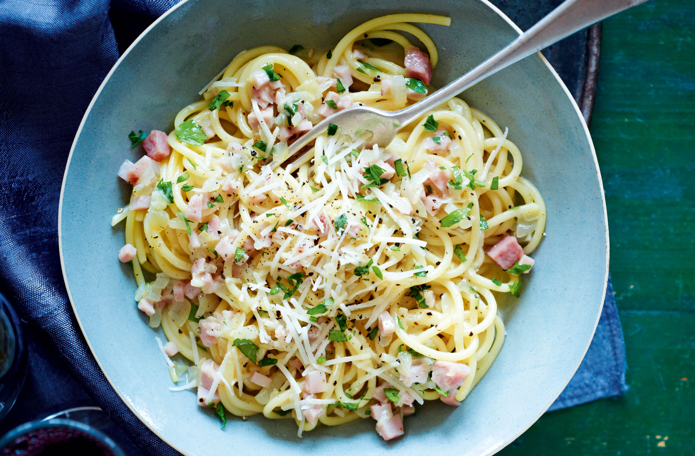

Carbonara

Carbonara is a classic Italian pasta dish made with spaghetti, eggs, Pecorino Romano or Parmigiano-Reggiano cheese, pancetta or bacon, and black pepper. The dish is typically prepared by cooking the spaghetti until al dente, then mixing it with a sauce made by combining eggs, cheese, and pepper, and finally adding crispy pancetta or bacon. The heat from the pasta cooks the eggs and creates a creamy and delicious sauce. Carbonara is a simple yet flavorful dish that has become popular all over the world.
Ingredients
- 1 lb spaghetti
- 6 oz pancetta or bacon, diced
- 4 egg yolks
- 1 cup grated Parmesan cheese
- 1 tsp black pepper
- Salt, to taste
Instructions
- Bring a large pot of salted water to a boil. Add the spaghetti and cook until al dente, according to package instructions.
- While the spaghetti is cooking, heat a large skillet over medium-high heat. Add the diced pancetta or bacon and cook until crispy and browned, stirring occasionally.
- In a medium bowl, whisk together the egg yolks, grated Parmesan cheese, black pepper, and a pinch of salt.
- When the spaghetti is done cooking, reserve 1 cup of the pasta water and then drain the spaghetti.
- Add the cooked pancetta or bacon to the skillet with the reserved pasta water, and heat over medium heat.
- Add the spaghetti to the skillet with the pancetta or bacon and toss to combine.
- Remove the skillet from the heat, and add the egg mixture to the spaghetti. Toss quickly to coat the spaghetti evenly and avoid scrambling the eggs.
- Season with salt to taste, and serve immediately with additional grated Parmesan cheese and black pepper on top.